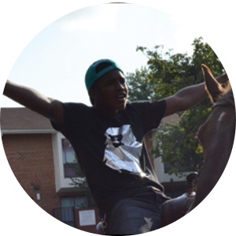
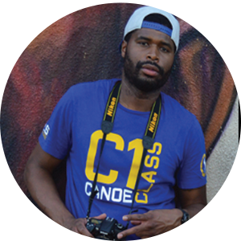

the story //
The Baltimore A-rabs is a story that dates back over 100 years. Young Ahmad is now 14 years old and he is the youngest in his family to carry the torch of the Baltimore A-rab dynasty. The A-rabs have long been a tradition of the city bringing fresh produce to many neighborhoods, providing for families, and even operating on a credit system for the less fortunate. Ahmad’s family owns a horse stable and manages over 50 horses in the west side part of the city. He takes a ride with us through some of the streets that he travels daily, shares his family’s story, and reminds us of the power of tradition, hustle and manifesting dreams.
casting //

Ahmad
Young Baltimore A-rab
Young Ahmad, 14 years old, has been riding horses since he was 4 years old. His family owns a horse stable in Baltimore City. He’s next in line to take control of the family business.
Unc
The Family Overseer
Unc has been around for awhile, he watched Young Ahmad and his dad both grow up and learn the horse business. Unc provides guidance and direction to the family.

Jared
Videographer
Fresh from Connecticut, the NC native, Jared has hit the Baltimore scene and is taking the city on, with his creative style, documenting via videography. In this coming of age story, Jared is the lead producer.
Montier
Creator of The Ivy Project
Montier has been assisting Frazier with the City of Gods Shop brand for the past four years. Owning web development, now adding videography to the repertoire, Montier is the co-producer for this project.

The Horse
Friendly Participant
This lucky guy had the wonderful opportunity of traveling the streets of Baltimore with his companion, Ahmad. This horse has seen many roads, and many rides. We couldn’t have made this production without you.
Frazier
Chief of City of Gods Shop
Frazier has been head of operations at City of Gods Shop in Baltimore for the last five years. His vision to take COG to the next level will include many community initiatives, especially capturing the stories of those making an impact on Baltimore City.
set details //
location
pennsylvania avenue & mosher street
baltimore, md
date
July 15, 2015
objective
to tell the story of baltimore's arab tradition through the lens of ahmad
spotlight //
This project came about because Frazier, chief of City of Gods Shop, ran into Ahmad while out one day in the city. Frazier has a natural inclination to help people, share their stories and also share how we are all conjoined in some way - either through circumstance, struggle, ambition or recognizing our own inner gods. Through City of Gods Shop, a brick and mortar business that focuses on urban apparel and lifestyle, Frazier saw an opportunity to merge the two stories, the brand’s story and Ahmad’s family. Special thanks to Frazier and City of Gods for inviting the artists to capture this moment.